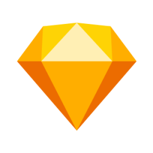
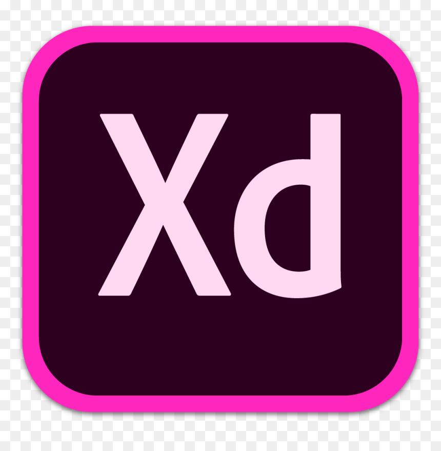

Figma: Muito usado por equipes colaborativas e com suporte para protótipos de baixa a alta fidelidade, sem exigir código.

Sketch: Ideal para design de interface e protótipos interativos, com curva de aprendizado simples.

Adobe XD: Para criar experiências de usuário (UX) completas para web e mobile.
Webflow: Excelente para sites responsivos, com recursos desde a prototipação até a publicação.
Ferramentas simples como NinjaMock e PowerPoint são úteis em protótipos iniciais. Para produtos físicos, usam-se ferramentas como SolidWorks, Arduino e Raspberry Pi.